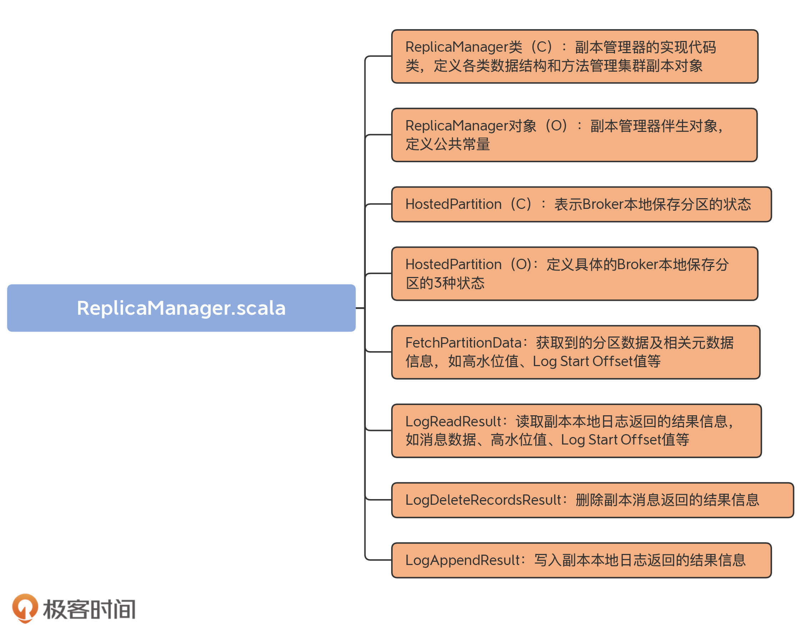
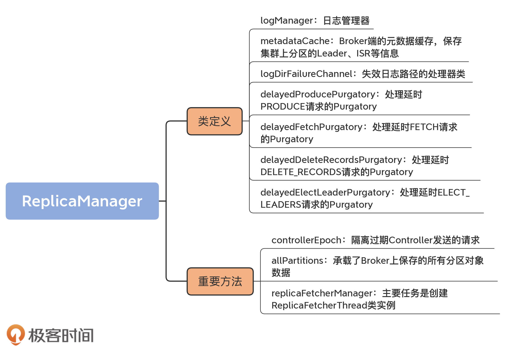

- 00 导读 构建Kafka工程和源码阅读环境、Scala语言热身.md.html
- 00 开篇词 阅读源码，逐渐成了职业进阶道路上的“必选项”.md.html
- 00 重磅加餐 带你快速入门Scala语言.md.html
- 01 日志段：保存消息文件的对象是怎么实现的？.md.html
- 02 日志（上）：日志究竟是如何加载日志段的？.md.html
- 03 日志（下）：彻底搞懂Log对象的常见操作.md.html
- 04 索引（上）：改进的二分查找算法在Kafka索引的应用.md.html
- 05 索引（下）：位移索引和时间戳索引的区别是什么？.md.html
- 06 请求通道：如何实现Kafka请求队列？.md.html
- 07 SocketServer（上）：Kafka到底是怎么应用NIO实现网络通信的？.md.html
- 08 SocketServer（中）：请求还要区分优先级？.md.html
- 09 SocketServer（下）：请求处理全流程源码分析.md.html
- 10 KafkaApis：Kafka最重要的源码入口，没有之一.md.html
- 11 Controller元数据：Controller都保存有哪些东西？有几种状态？.md.html
- 12 ControllerChannelManager：Controller如何管理请求发送？.md.html
- 13 ControllerEventManager：变身单线程后的Controller如何处理事件？.md.html
- 14 Controller选举是怎么实现的？.md.html
- 15 如何理解Controller在Kafka集群中的作用？.md.html
- 16 TopicDeletionManager： Topic是怎么被删除的？.md.html
- 17 ReplicaStateMachine：揭秘副本状态机实现原理.md.html
- 18 PartitionStateMachine：分区状态转换如何实现？.md.html
- 19 TimingWheel：探究Kafka定时器背后的高效时间轮算法.md.html
- 20 DelayedOperation：Broker是怎么延时处理请求的？.md.html
- 21 AbstractFetcherThread：拉取消息分几步？.md.html
- 22 ReplicaFetcherThread：Follower如何拉取Leader消息？.md.html
- 23 ReplicaManager（上）：必须要掌握的副本管理类定义和核心字段.md.html
- 24 ReplicaManager（中）：副本管理器是如何读写副本的？.md.html
- 25 ReplicaManager（下）：副本管理器是如何管理副本的？.md.html
- 26 MetadataCache：Broker是怎么异步更新元数据缓存的？.md.html
- 27 消费者组元数据（上）：消费者组都有哪些元数据？.md.html
- 28 消费者组元数据（下）：Kafka如何管理这些元数据？.md.html
- 29 GroupMetadataManager：组元数据管理器是个什么东西？.md.html
- 30 GroupMetadataManager：位移主题保存的只是位移吗？.md.html
- 31 GroupMetadataManager：查询位移时，不用读取位移主题？.md.html
- 32 GroupCoordinator：在Rebalance中，Coordinator如何处理成员入组？.md.html
- 33 GroupCoordinator：在Rebalance中，如何进行组同步？.md.html
- 特别放送（一）经典的Kafka学习资料有哪些？.md.html
- 特别放送（三）我是怎么度过日常一天的？.md.html
- 特别放送（二）一篇文章带你了解参与开源社区的全部流程.md.html
- 特别放送（五） Kafka 社区的重磅功能：移除 ZooKeeper 依赖.md.html
- 特别放送（四）20道经典的Kafka面试题详解.md.html
- 结束语 源码学习，我们才刚上路呢.md.html
- 捐赠
23 ReplicaManager（上）：必须要掌握的副本管理类定义和核心字段
你好，我是胡夕。
今天，我们要学习的是Kafka中的副本管理器ReplicaManager。它负责管理和操作集群中Broker的副本，还承担了一部分的分区管理工作，比如变更整个分区的副本日志路径等。
你一定还记得，前面讲到状态机的时候，我说过，Kafka同时实现了副本状态机和分区状态机。但对于管理器而言，Kafka源码却没有专门针对分区，定义一个类似于“分区管理器”这样的类，而是只定义了ReplicaManager类。该类不只实现了对副本的管理，还包含了很多操作分区对象的方法。
ReplicaManager类的源码非常重要，它是构建Kafka副本同步机制的重要组件之一。副本同步过程中出现的大多数问题都是很难定位和解决的，因此，熟练掌握这部分源码，将有助于我们深入探索线上生产环境问题的根本原因，防止以后踩坑。下面，我给你分享一个真实的案例。
我们团队曾碰到过一件古怪事：在生产环境系统中执行删除消息的操作之后，该操作引发了Follower端副本与Leader端副本的不一致问题。刚碰到这个问题时，我们一头雾水，在正常情况下，Leader端副本执行了消息删除后，日志起始位移值被更新了，Follower端副本也应该更新日志起始位移值，但是，这里的Follower端的更新失败了。我们查遍了所有日志，依然找不到原因，最后还是通过分析ReplicaManager类源码，才找到了答案。
我们先看一下这个错误的详细报错信息：
Caused by: org.apache.kafka.common.errors.OffsetOutOfRangeException: Cannot increment the log start offset to 22786435 of partition XXX-12 since it is larger than the high watermark 22786129
这是Follower副本抛出来的异常，对应的Leader副本日志则一切如常。下面的日志显示出Leader副本的Log Start Offset已经被成功调整了。
INFO Incrementing log start offset of partition XXX-12 to 22786435
碰到这个问题时，我相信你的第一反应和我一样：这像是一个Bug，但又不确定到底是什么原因导致的。后来，我们顺着KafkaApis一路找下去，直到找到了ReplicaManager的deleteRecords方法，才看出点端倪。
Follower副本从Leader副本拉取到消息后，会做两个操作：
- 写入到自己的本地日志；
- 更新Follower副本的高水位值和Log Start Offset。
如果删除消息的操作deleteRecords发生在这两步之间，因为deleteRecords会变更Log Start Offset，所以，Follower副本在进行第2步操作时，它使用的可能是已经过期的值了，因而会出现上面的错误。由此可见，这的确是一个Bug。在确认了这一点之后，后面的解决方案也就呼之欲出了：虽然deleteRecords功能实用方便，但鉴于这个Bug，我们还是应该尽力避免在线上环境直接使用该功能。
说到这儿，我想说一句，碰到实际的线上问题不可怕，可怕的是我们无法定位到问题的根本原因。写过Java项目的你一定有这种体会，很多时候，单纯依靠栈异常信息是不足以定位问题的。特别是涉及到Kafka副本同步这块，如果只看输出日志的话，你是很难搞清楚这里面的原理的，因此，我们必须要借助源码，这也是我们今天学习ReplicaManager类的主要目的。
接下来，我们就重点学习一下这个类。它位于server包下的同名scala文件中。这是一个有着将近1900行的大文件，里面的代码结构很琐碎。
因为副本的读写操作和管理操作都是重磅功能，所以，在深入细节之前，我们必须要理清ReplicaManager类的结构之间的关系，并且搞懂类定义及核心字段，这就是我们这节课的重要目标。
在接下来的两节课里，我会给你详细地解释副本读写操作和副本管理操作。学完这些之后，你就能清晰而深入地掌握ReplicaManager类的主要源码了，最重要的是，你会搞懂副本成为Leader或者是Follower时需要执行的逻辑，这就足以帮助你应对实际遇到的副本操作问题了。
代码结构
我们首先看下这个scala文件的代码结构。我用一张思维导图向你展示下：

虽然从代码结构上看，该文件下有8个部分， 不过HostedPartition接口以及实现对象放在一起更好理解，所以，我把ReplicaManager.scala分为7大部分。
- ReplicaManager类：它是副本管理器的具体实现代码，里面定义了读写副本、删除副本消息的方法以及其他管理方法。
- ReplicaManager对象：ReplicaManager类的伴生对象，仅仅定义了3个常量。
- HostedPartition及其实现对象：表示Broker本地保存的分区对象的状态。可能的状态包括：不存在状态（None）、在线状态（Online）和离线状态（Offline）。
- FetchPartitionData：定义获取到的分区数据以及重要元数据信息，如高水位值、Log Start Offset值等。
- LogReadResult：表示副本管理器从副本本地日志中读取到的消息数据以及相关元数据信息，如高水位值、Log Start Offset值等。
- LogDeleteRecordsResult：表示副本管理器执行副本日志删除操作后返回的结果信息。
- LogAppendResult：表示副本管理器执行副本日志写入操作后返回的结果信息。
从含义来看，FetchPartitionData和LogReadResult很类似，它们的区别在哪里呢？
其实，它们之间的差别非常小。如果翻开源码的话，你会发现，FetchPartitionData类总共有8个字段，而构建FetchPartitionData实例的前7个字段都是用LogReadResult的字段来赋值的。你大致可以认为两者的作用是类似的。只是，FetchPartitionData还有个字段标识该分区是不是处于重分配中。如果是的话，需要更新特定的JXM监控指标。这是这两个类的主要区别。
在这7个部分中，ReplicaManager类是我们学习的重点。其他类要么仅定义常量，要么就是保存数据的POJO类，作用一目了然，我就不展开讲了。
ReplicaManager类定义
接下来，我们就从Replica类的定义和重要字段这两个维度入手，进行学习。首先看ReplicaManager类的定义。
class ReplicaManager(
val config: KafkaConfig, // 配置管理类
metrics: Metrics, // 监控指标类
time: Time, // 定时器类
val zkClient: KafkaZkClient, // ZooKeeper客户端
scheduler: Scheduler, // Kafka调度器
val isShuttingDown: AtomicBoolean, // 是否已经关闭
quotaManagers: QuotaManagers, // 配额管理器
val brokerTopicStats: BrokerTopicStats, // Broker主题监控指标类
val metadataCache: MetadataCache, // Broker元数据缓存
logDirFailureChannel: LogDirFailureChannel,
// 处理延时PRODUCE请求的Purgatory
val delayedProducePurgatory: DelayedOperationPurgatory[DelayedProduce],
// 处理延时FETCH请求的Purgatory
val delayedFetchPurgatory: DelayedOperationPurgatory[DelayedFetch],
// 处理延时DELETE_RECORDS请求的Purgatory
val delayedDeleteRecordsPurgatory: DelayedOperationPurgatory[DelayedDeleteRecords],
// 处理延时ELECT_LEADERS请求的Purgatory
val delayedElectLeaderPurgatory: DelayedOperationPurgatory[DelayedElectLeader],
threadNamePrefix: Option[String]) extends Logging with KafkaMetricsGroup {
......
}
ReplicaManager类构造函数的字段非常多。有的字段含义很简单，像time和metrics这类字段，你一看就明白了，我就不多说了，我详细解释几个比较关键的字段。这些字段是我们理解副本管理器的重要基础。
1. logManager
这是日志管理器。它负责创建和管理分区的日志对象，里面定义了很多操作日志对象的方法，如getOrCreateLog等。
2. metadataCache
这是Broker端的元数据缓存，保存集群上分区的Leader、ISR等信息。注意，它和我们之前说的Controller端元数据缓存是有联系的。每台Broker上的元数据缓存，是从Controller端的元数据缓存异步同步过来的。
3. logDirFailureChannel
这是失效日志路径的处理器类。Kafka 1.1版本新增了对于JBOD的支持。这也就是说，Broker如果配置了多个日志路径，当某个日志路径不可用之后（比如该路径所在的磁盘已满），Broker能够继续工作。那么，这就需要一整套机制来保证，在出现磁盘I/O故障时，Broker的正常磁盘下的副本能够正常提供服务。
其中，logDirFailureChannel是暂存失效日志路径的管理器类。我们不用具体学习这个特性的源码，但你最起码要知道，该功能算是Kafka提升服务器端高可用性的一个改进。有了它之后，即使Broker上的单块磁盘坏掉了，整个Broker的服务也不会中断。
4. 四个Purgatory相关的字段
这4个字段是delayedProducePurgatory、delayedFetchPurgatory、delayedDeleteRecordsPurgatory和delayedElectLeaderPurgatory，它们分别管理4类延时请求的。其中，前两类我们应该不陌生，就是处理延时生产者请求和延时消费者请求；后面两类是处理延时消息删除请求和延时Leader选举请求，属于比较高阶的用法（可以暂时不用理会）。
在副本管理过程中，状态的变更大多都会引发对延时请求的处理，这时候，这些Purgatory字段就派上用场了。
只要掌握了刚刚的这些字段，就可以应对接下来的副本管理操作了。其中，最重要的就是logManager。它是协助副本管理器操作集群副本对象的关键组件。
重要的自定义字段
学完了类定义，我们看下ReplicaManager类中那些重要的自定义字段。这样的字段大约有20个，我们不用花时间逐一学习它们。像isrExpandRate、isrShrinkRate这样的字段，我们只看名字，就能知道，它们是衡量ISR变化的监控指标。下面，我详细介绍几个对理解副本管理器至关重要的字段。我会结合代码，具体讲解它们的含义，同时还会说明它们的重要用途。
controllerEpoch
我们首先来看controllerEpoch字段。
这个字段的作用是隔离过期Controller发送的请求。这就是说，老的Controller发送的请求不能再被继续处理了。至于如何区分是老Controller发送的请求，还是新Controller发送的请求，就是看请求携带的controllerEpoch值，是否等于这个字段的值。以下是它的定义代码：
@volatile var controllerEpoch: Int =
KafkaController.InitialControllerEpoch
该字段表示最新一次变更分区Leader的Controller的Epoch值，其默认值为0。Controller每发生一次变更，该字段值都会+1。
在ReplicaManager的代码中，很多地方都会用到它来判断Controller发送过来的控制类请求是否合法。如果请求中携带的controllerEpoch值小于该字段值，就说明这个请求是由一个老的Controller发出的，因此，ReplicaManager直接拒绝该请求的处理。
值得注意的是，它是一个var类型，这就说明它的值是能够动态修改的。当ReplicaManager在处理控制类请求时，会更新该字段。可以看下下面的代码：
// becomeLeaderOrFollower方法
// 处理LeaderAndIsrRequest请求时
controllerEpoch = leaderAndIsrRequest.controllerEpoch
// stopReplicas方法
// 处理StopReplicaRequest请求时
this.controllerEpoch = controllerEpoch
// maybeUpdateMetadataCache方法
// 处理UpdateMetadataRequest请求时
controllerEpoch = updateMetadataRequest.controllerEpoch
Broker上接收的所有请求都是由Kafka I/O线程处理的，而I/O线程可能有多个，因此，这里的controllerEpoch字段被声明为volatile型，以保证其内存可见性。
allPartitions
下一个重要的字段是allPartitions。这节课刚开始时我说过，Kafka没有所谓的分区管理器，ReplicaManager类承担了一部分分区管理的工作。这里的allPartitions，就承载了Broker上保存的所有分区对象数据。其定义代码如下：
private val allPartitions = new Pool[TopicPartition, HostedPartition](
valueFactory = Some(tp => HostedPartition.Online(Partition(tp, time, this)))
)
从代码可见，allPartitions是分区Partition对象实例的容器。这里的HostedPartition是代表分区状态的类。allPartitions会将所有分区对象初始化成Online状态。
值得注意的是，这里的分区状态和我们之前讲到的分区状态机里面的状态完全隶属于两套“领导班子”。也许未来它们会有合并的可能。毕竟，它们二者的功能是有重叠的地方的，表示的含义也有相似之处。比如它们都定义了Online状态，其实都是表示正常工作状态下的分区状态。当然，这只是我根据源码功能做的一个大胆推测，至于是否会合并，我们拭目以待吧。
再多说一句，Partition类是表征分区的对象。一个Partition实例定义和管理单个分区，它主要是利用logManager帮助它完成对分区底层日志的操作。ReplicaManager类对于分区的管理，都是通过Partition对象完成的。
replicaFetcherManager
第三个比较关键的字段是replicaFetcherManager。它的主要任务是创建ReplicaFetcherThread类实例。上节课，我们学习了ReplicaFetcherThread类的源码，它的主要职责是帮助Follower副本向Leader副本拉取消息，并写入到本地日志中。
下面展示了ReplicaFetcherManager类的主要方法createFetcherThread源码：
override def createFetcherThread(fetcherId: Int, sourceBroker: BrokerEndPoint): ReplicaFetcherThread = {
val prefix = threadNamePrefix.map(tp => s"$tp:").getOrElse("")
val threadName = s"${prefix}ReplicaFetcherThread-$fetcherId-${sourceBroker.id}"
// 创建ReplicaFetcherThread线程实例并返回
new ReplicaFetcherThread(threadName, fetcherId, sourceBroker, brokerConfig, failedPartitions, replicaManager,
metrics, time, quotaManager)
}
该方法的主要目的是创建ReplicaFetcherThread实例，供Follower副本使用。线程的名字是根据fetcherId和Broker ID来确定的。ReplicaManager类利用replicaFetcherManager字段，对所有Fetcher线程进行管理，包括线程的创建、启动、添加、停止和移除。
总结
这节课，我主要介绍了ReplicaManager类的定义以及重要字段。它们是理解后面ReplicaManager类管理功能的基础。
总的来说，ReplicaManager类是Kafka Broker端管理分区和副本对象的重要组件。每个Broker在启动的时候，都会创建ReplicaManager实例。该实例一旦被创建，就会开始行使副本管理器的职责，对其下辖的Leader副本或Follower副本进行管理。
我们再简单回顾一下这节课的重点。
- ReplicaManager类：副本管理器的具体实现代码，里面定义了读写副本、删除副本消息的方法，以及其他的一些管理方法。
- allPartitions字段：承载了Broker上保存的所有分区对象数据。ReplicaManager类通过它实现对分区下副本的管理。
- replicaFetcherManager字段：创建ReplicaFetcherThread类实例，该线程类实现Follower副本向Leader副本实时拉取消息的逻辑。

今天，我多次提到ReplicaManager是副本管理器这件事。实际上，副本管理中的两个重要功能就是读取副本对象和写入副本对象。对于Leader副本而言，Follower副本需要读取它的消息数据；对于Follower副本而言，它拿到Leader副本的消息后，需要将消息写入到自己的底层日志上。那么，读写副本的机制是怎么样的呢？下节课，我们深入地探究一下ReplicaManager类重要的副本读写方法。
课后讨论
在ReplicaManager类中有一个offlinePartitionCount方法，它的作用是统计Offline状态的分区数，你能写一个方法统计Online状态的分区数吗？
欢迎在留言区写下你的思考和答案，跟我交流讨论，也欢迎你把今天的内容分享给你的朋友。
© 2019 - 2023 Liangliang Lee. Powered by gin and hexo-theme-book.